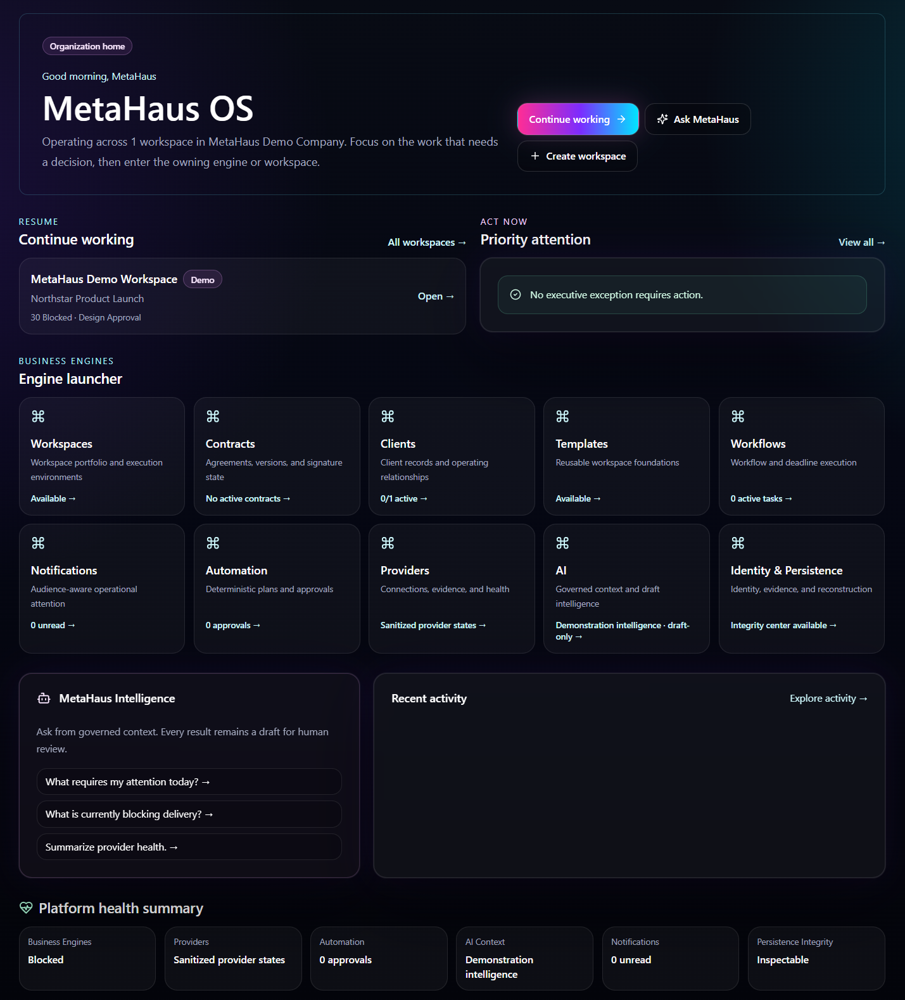
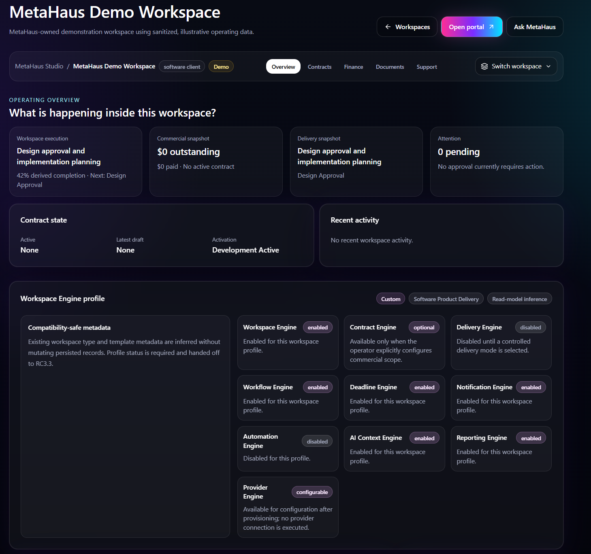
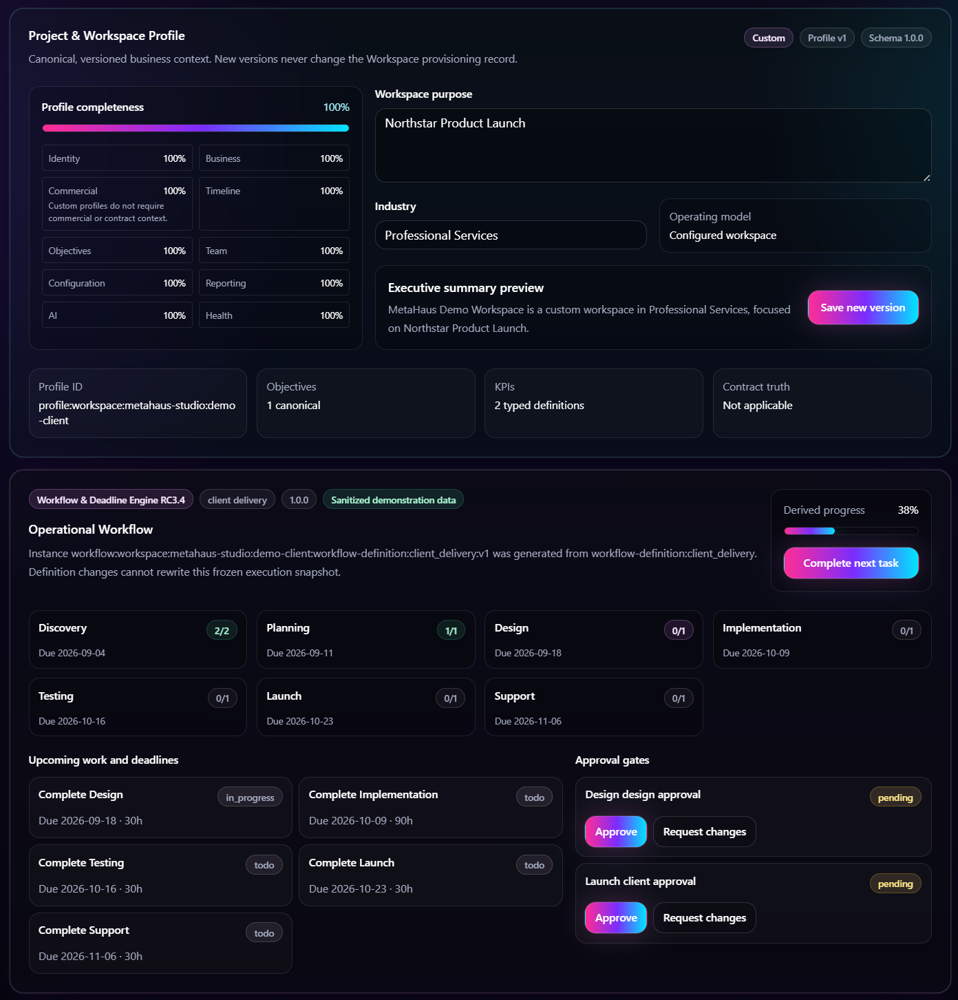
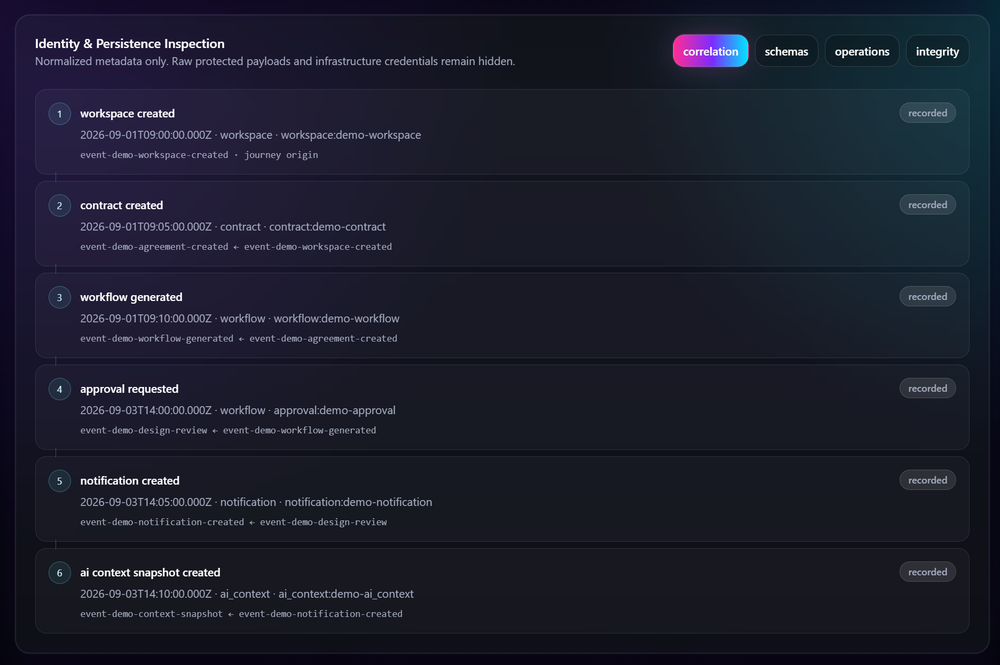

Controlled product evidence
MetaHaus OS
Run the business.
01
Organization Home
One place to enter the workspaces and engines that run the business.

02
Workspace Overview
Operating context, commercial state, delivery and configured engines.

03
Workflow & Delivery
Structured phases, deadlines, approval gates and execution.

04
Identity & Persistence
Durable operational history, evidence and reconstruction.
